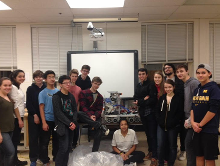
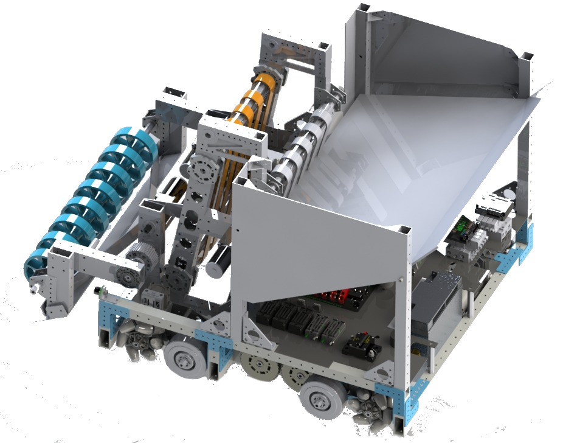
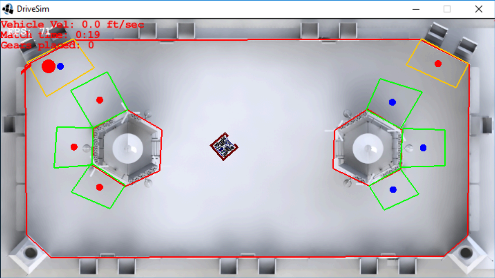
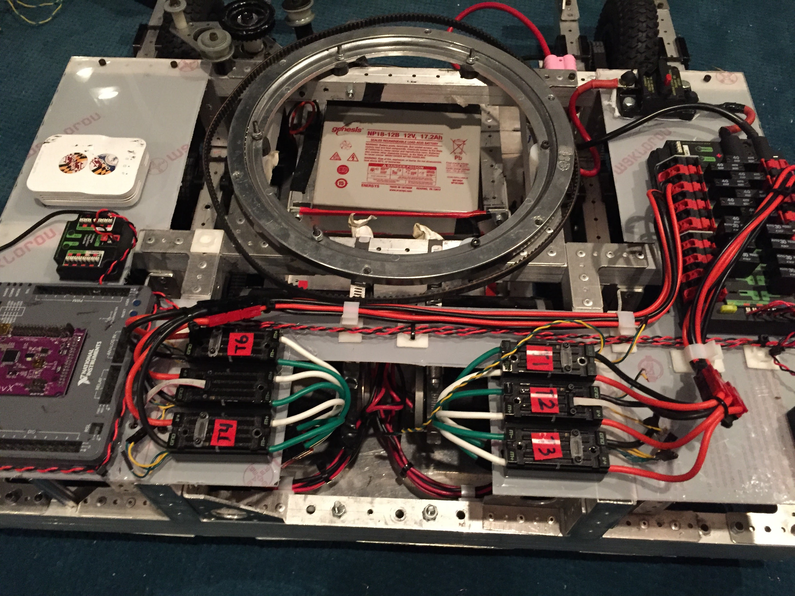
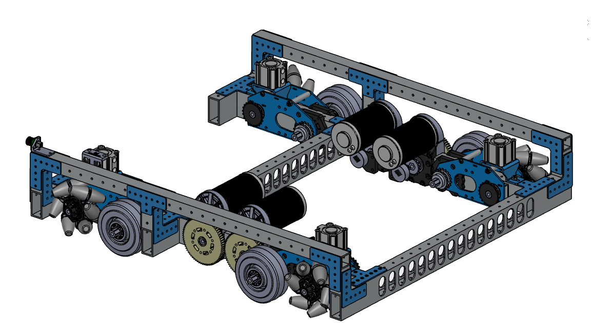
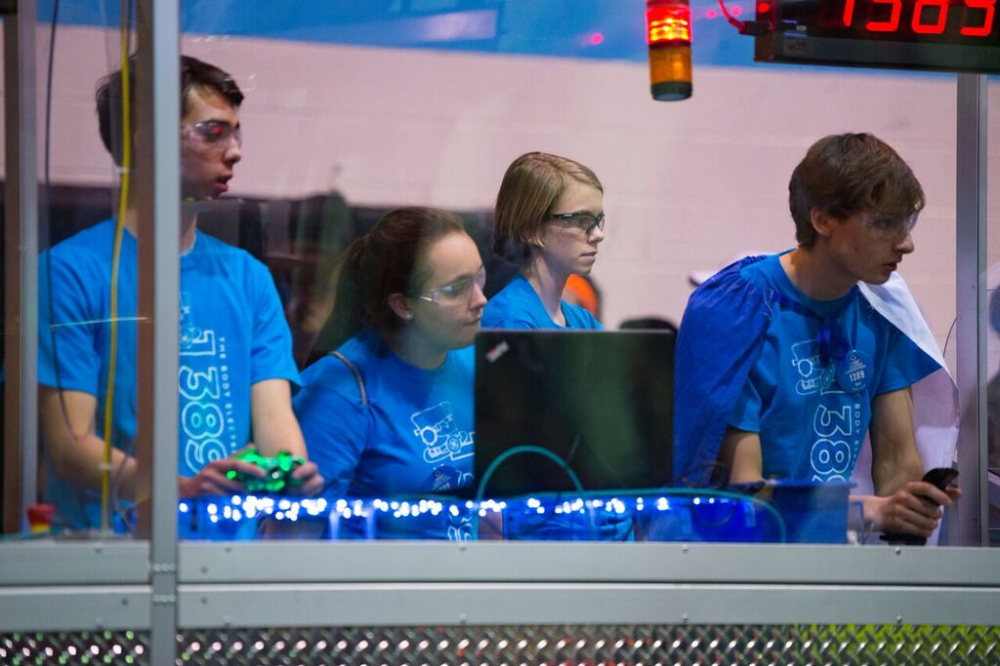
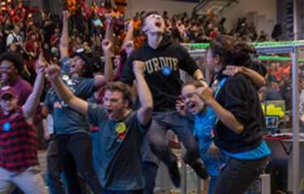

Overview
Helped lead FRC Team 1389 "The Body Electric" to a district event win and a Chesapeake District Championship qualification across two competition seasons. I owned the software and electrical systems for both robots—Maelstrom (2016, FIRST Stronghold) and Stratus (2017, FIRST Steamworks)—delivering autonomous scoring routines, real-time vision pipelines, and competition-reliable wiring from scratch.


Software Development
Architected the full robot software stack in Java on WPILib, deployed to a roboRIO controller. Every autonomous and vision feature shipped to the competition field:
- Autonomous routines: Designed and tuned center-gear and side-gear placement routines that scored reliably within the 15-second autonomous window, using encoder-based path following with gyroscope-corrected heading.
- Computer vision: Built real-time target-detection pipelines on on-board cameras, enabling automated alignment to gear pegs and boiler targets. Streamed camera feeds to the driver station for manual driving support.
- Real-time web dashboards: Developed WebSocket-based telemetry dashboards that gave the drive team live visibility into motor currents, sensor readings, and subsystem states during matches.
- Reusable libraries: Created modular libraries for PID control, motion profiling, and sensor abstraction—reused across both seasons and shared with other FRC teams.
Electrical Systems
Designed and wired both robots' complete electrical systems, achieving zero electrical failures across all competition matches:
- Power distribution: Laid out the PDP to supply 12V battery power to all motors, the roboRIO, and auxiliary electronics, selecting breaker sizes per circuit for overcurrent protection.
- Motor controllers: Wired and configured Talon SRX controllers for the drivetrain, elevator, and intake over CAN bus, enabling closed-loop velocity and position control.
- Sensor integration: Routed encoders, limit switches, gyroscopes, and camera modules with clean signal-cable paths to minimize electromagnetic interference.
- Competition-grade cable management: Engineered wiring harnesses and cable routing to survive repeated impacts and vibration across multi-match competition days.


Mechanical Contributions
Contributed to key mechanical subsystems on Maelstrom, directly improving match performance:
- Shooter arm redesign: Redesigned the shooter/intake arm to reduce weight and improve ball centering by integrating mecanum wheels, increasing intake efficiency noticeably in match play.
- Drop-six drivetrain: Built a six-wheel drive with a lowered center wheel pair for agile turning, powered by CIM motors through chain drive and gearboxes.


Competition Results
Achieved a 1st-place finish and an Entrepreneurship Award during the 2017 Steamworks season, qualifying for the Chesapeake District Championship:
- Greater DC Regional (Week 2): Ranked 13th; selected for the 8th-seeded alliance and advanced to the finals, finishing 2nd place. Validated climber reliability and identified gear-intake improvements for the next event.
- Central Maryland District (Week 4): Ranked 13th; selected for the 5th-seeded alliance and won the event. Awarded the Entrepreneurship Award for team business and outreach strategy.
- CHS District Championship: Qualified on accumulated district points, competing against the top teams in the Chesapeake region.

